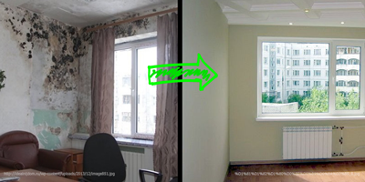
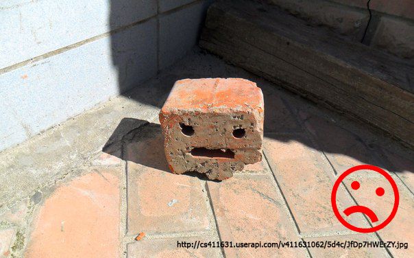

ТОП5 ЧАСТЫХ ОШИБОК САМОСТОЯТЕЛЬНОГО РЕМОНТА
Исправлять ошибки в строительстве дороже, чем строить сразу для жизни. Наши менеджеры заметили, что каждый третий наш клиент приходит после того как предпринял попытки ремонтировать квартиру самостоятельно. Любим собирать такие истории. Вот пять из них, которые повторяются чаще остальных.
1. ОТСУТСТВИЕ ЧЕТКОГО ПЛАНА РАБОТ.
Первая ошибка, которая влечет за собой последующие – ремонтировать квартиру без четкого плана работ и сметы. При таком подходе сроки не выполнить, первоначальный бюджет неконтролируемо вырастет, а изначальный энтузиазм постепенно угаснет. Такой ремонт нельзя закончить - его можно только приостановить на время. В компании «Мегастрой» мы ценим время клиента, отражая точные сроки в плане работ. В смете зафиксируем полную стоимость. Эти два параметра договора останутся без изменений на протяжении нашего сотрудничества. Выполняя мечты о домашнем уюте, мы учитываем то как расположат мебель, бытовую технику, и даже направления сквозняков для спальных мест.

2. НАРУШЕНИЕ ТЕХНОЛОГИИ.
Хуже некуда, когда результат перестает радовать уже через пару месяцев. Мы знаем почему спустя пару месяцев после окончания работ начинаются проблемы: в углу появляется плесень, штукатурка осыпается, плитка бьется, а обои отклеиваются. Ведь, стены покрывают грунтовкой с защитой от плесени, стяжки просыхают две недели, а температура, которая нужна для поклейки обоев от 18° до 23°. Будьте уверены в знаниях и опыте наших сотрудников, как уверены в них мы, когда предоставляем гарантию на наши работы в 3 года.
3. ПЛОХИЕ МАТЕРИАЛЫ И ПЕРЕРАСХОД МАТЕРИАЛОВ.
Ремонтировать закончили и на первый взгляд все хорошо. Но вот труба шумит, а вы успокаиваете себя тем, что привыкните. Нет. Не привыкните. Знакомые советовали пластиковые трубы из-за долговечности, но не сказали о необходимости шумоизоляции. А еще всех, кто ремонтировал самостоятельно, объединяет такое хобби – хранить лишний мешок плиточного клея или хотя бы коробку плитки на балконе. Мы уверены, что сделаем работы без перерасхода материалов. В случае, если после утверждения сметы придется докупать материалы – то сделаем это за свой счет! Выбор и доставка подходящих материалов будет напрямую от производителя. Благодаря нашим прямым контрактам с Knauf, Ceresit, Kronotex - цены будут ниже чем в строительных гипермаркетах города.
